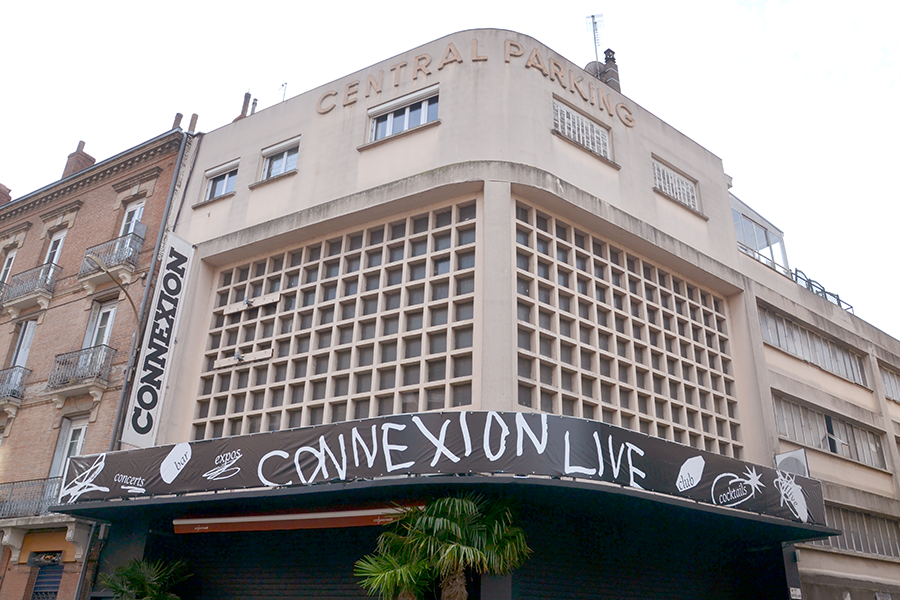
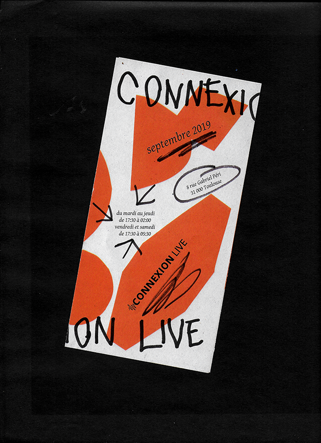
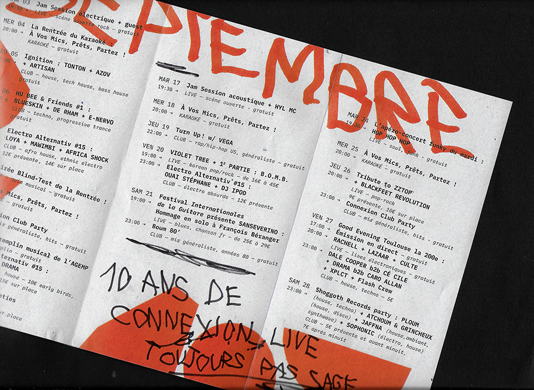
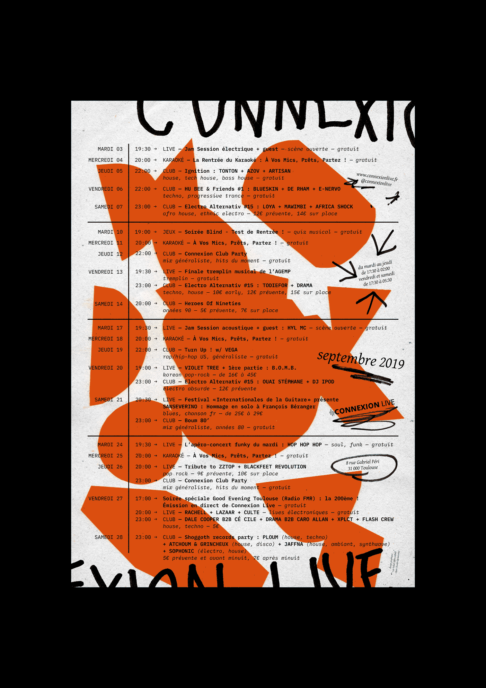
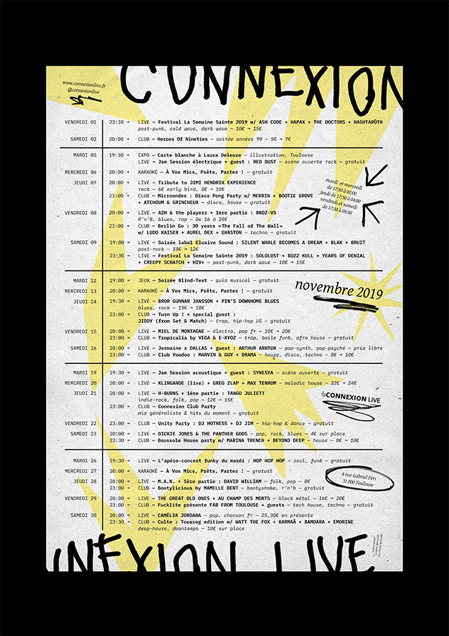

- 
- 
- 
- 
- 
Identité graphique de la salle de concert
le Connexion Live, pour son anniversaire :
"10 ans de Connexion Live, toujours pas sage !"
Identité déployée en affiches et programmes mensuels
et réalisation des bâches extérieures.
— septembre 2019


La Forêt Électrique est un cinéma éphémère indépendant,
à Toulouse. Elle est en majorité composée de bénévoles :
électrons, protons et neutrons qui gravitent et stabilisent
l’atome autour de 3 pôles. Organique, la Forêt évolue
avec ses membres qu’ils soient au niveau de l’accueil,
de la diffusion ou de la production et se placent
en fonction de leur implication : de l’électron
qui gravite à l’extérieur de l’atome,
jusqu'au proton qui stabilise la structure.
Cette affiche aimantée a été conçue comme un outil
pour l'écosystème derrière la Forêt Électrique :
visualiser les différents rôles, faire communauté,
s’organiser et servir de support à la médiation.
— juillet 2018


Identité graphique de la Ferme de la Mhotte conçue
sur place durant 3 mois. L'identité est la cartographie
des liens qui s'établissent entre les différentes sctructures
composant la Ferme, reflet de ce qu'elles sont en pratique.
L’identité s’est concrétisée par un atelier tampon invitant chacun à découvrir et se saisir des différents signes,
afin de tamponner les planches A3, ensuite découpées
pour créer les cartes de visites et les cartes postales.
Le projet a aussi été développé en signalétique
et sur le site internet.
— juillet 2017


MEMO : Maison de quartier En MOuvement
Système d’affichage autonome de la programmation
de la Maison de Quartier du Petit-Ivry afin de rendre
visible et lisible la richesse des associations présentes.
Le mur se lit tel un tableur, il organise les associations par lieu d'intervention et public visé.
Parcours urbains pour inviter les ivryens à (re)découvrir
leur quartier, en collaboration avec Ne Rougissez Pas.
— juin 2016


Affiche rendant hommage à Coluche pour le triste anniversaire des 30 ans des Restos du Cœur.
— janvier 2016